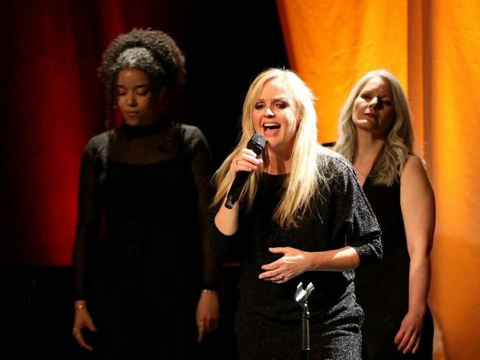

Sandie Wollasch
Im Sommer 2022 gewinne ich das Stipendium Perspektive Pop, dass mir mein Herzensprojekt "Women‘s Choice" ermöglicht. Zusammen mit dem famosen Klaus Wagenleiter Trio als Begleitband, lud ich Frauen aus ganz unterschiedlichen Genres ein. Mit dabei sind: Michelle Labonte (Saxofon), Andrea Ritter (Blockflöte), Sarah Lipfert (Gesang), Sandrine Neye (Gesang) & Les Escapades, das bekannte Gambenconsort aus Karlsruhe. Das zugehörige Album erscheint erscheint am 15. März 2024.